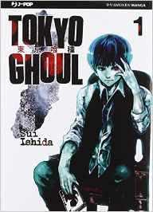
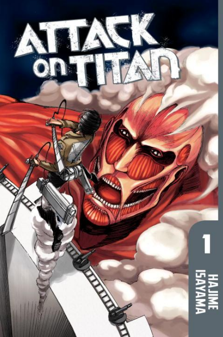
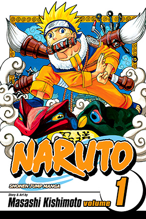

| Tokyo Ghoul |
 |
A Tokyo si verificano una serie di strani e cruenti omicidi dovuti alla presenza di ghoul, mostri che vedono gli umani solo come prede e che si possono cibare unicamente della loro carne. Ken Kaneki è uno studente universitario, dedito allo studio e alla lettura, che un giorno conosce in un bar Rize, sua affascinante coetanea: in realtà anche la ragazza è un ghoul e Ken diventerà ben presto la sua preda. Rize infatti, con un pretesto, attira Ken in un luogo isolato dove lo ferisce gravemente con dei ripetuti attacchi, ma prima di poterlo divorare, muore colpita da una serie di travi d'acciaio, che precipitano fortunatamente da un edificio in costruzione nei paraggi. Il ragazzo viene quindi portato d'urgenza in un ospedale dove il chirurgo della sua operazione, in un gesto disperato, decide di sottoporlo a un trapianto di organi, presi proprio dal corpo di Rize. Sopravvissuto all'impossibile, Ken inizia presto a capire però di essere diventato anche lui una specie di ghoul in una città sparsa di questi mostri, dove ciascuno, per mangiare, deve "cacciare" nel proprio territorio. |
Pezzi disponibili: 22 |
Prezzo: 14.99€ |
Aggiungi al carrello! |
| Shingeki no Kyojin |
 |
Nell'anno 845 compare un gigante alto circa 60 metri, che con un calcio crea una breccia nella cinta esterna del Muro Maria, presso la città di Shiganshina. I giganti sciamano al suo interno divorando quanti più umani possibili, mentre questi cercano inutilmente di difendersi e trasferire più gente possibile all'interno della seconda cerchia di mura; ma prima che gli uomini riescano a chiudere la porta interna delle mura, un gigante corazzato la sfonda con un colpo e gli umani sono costretti a ripiegare sul Muro Rose. In seguito tentano una disperata riconquista del territorio perduto, circa un terzo del totale, che fallisce miseramente. L'enorme perdita di uomini contribuisce per lo meno ad attenuare la carestia di cibo creatasi per la perdita di una porzione territoriale così grande. Il gigante colossale e quello corazzato spariscono misteriosamente dopo aver spianato la strada ai loro simili. |
Pezzi disponibili: 14 |
Prezzo: 4.99€ |
Aggiungi al carrello! |
| Mirai Nikki |
 |
Il protagonista, Yukiteru Amano, è un ragazzo asociale, chiuso in sé stesso ed isolato che tiene un diario sul suo cellulare nel quale annota tutto ciò che gli accade attorno. Yukiteru pensa di avere un amico immaginario, chiamato Deus Ex Machina, il signore del tempo.
Un giorno Deus decide di organizzare un gioco e riconsegna a Yukiteru il suo cellulare, dopo averlo modificato personalmente, ma il ragazzo si accorge presto di alcune stranezze. Il diario invece di contenere le informazioni scritte da lui, riporta fatti non ancora accaduti: il cellulare riesce a prevedere il futuro. Questa "modifica" però ben presto verrà applicata ai cellulari di altre undici persone, oltre a Yukiteru (il primo). Il gioco consiste in un "survival game" dove i partecipanti devono cercare di uccidersi a vicenda o di distruggere i diari del futuro degli avversari (cosa che li uccide, essendo i diari del futuro direttamente collegati al futuro del proprietario). Chi sopravviverà allo scontro prenderà il posto di Deus nel diventare dio del tempo e dello spazio. |
Pezzi disponibili: 5 |
Prezzo: 6.99€ |
Aggiungi al carrello! |
| Death Parade |
 |
l Quindecim (クィーン・デキム Kuīn Dekimu?) è un misterioso bar dove lavora un barista solitario di nome Decim. Ogni volta che due persone sulla Terra muoiono allo stesso tempo, esse sono mandate a uno dei molti misteriosi bar come il Quindecim, dove saranno costrette a partecipare al Death Game (デスゲーム Desu Gēmu?), un gioco mortale nel corso del quale i segreti che le hanno portate lì e il loro destino saranno svelati: Decim è infatti uno dei giudici che deciderà se la loro anima sarà reincarnata o finirà nel vuoto. |
Pezzi disponibili: 41 |
Prezzo: 4.49€ |
Aggiungi al carrello! |
| Naruto |
 |
Naruto Uzumaki è un ninja dodicenne del Villaggio della Foglia con il sogno di diventare Hokage, il ninja più importante del villaggio. Naruto ha passato l'infanzia nell'emarginazione e, durante uno scontro con Mizuki, un ninja traditore, viene a scoprirne il motivo: dentro di lui è sigillata la Volpe a Nove Code, uno dei nove cercoteri, giganteschi demoni sovrannaturali. Dopo avere sconfitto Mizuki, Naruto viene promosso all'accademia ninja e viene integrato nel gruppo sette composto, oltre a lui, da Sasuke Uchiha, Sakura Haruno e il maestro Kakashi Hatake[3][4]. Dopo varie avventure, Sasuke decide di abbandonare il villaggio per allenarsi con Orochimaru ed ottenere il potere necessario per uccidere suo fratello Itachi con lo scopo di vendicare il suo clan, da lui apparentemente sterminato senza un chiaro movente[4]. Con il tentativo fallito di redimere Sasuke e la sua conseguente fuga dal paese, Naruto decide di abbandonare il Villaggio della Foglia e intraprendere con il maestro Jiraiya un lungo allenamento[5]. |
Pezzi disponibili: 13 |
Prezzo: 8.99€ |
Aggiungi al carrello! |